6 Deformation of solids
Stress and strain, elastic and plastic behaviour, and the Young modulus
Learning objectives
By the end of this chapter, you should be able to:
- understand that deformation is caused by tensile or compressive forces;
- use the terms load, extension, compression and limit of proportionality;
- recall and use Hooke’s law \(F=kx\);
- recall and use the spring constant \(k=F/x\);
- define and use stress, strain and the Young modulus;
- describe an experiment to determine the Young modulus of a wire;
- interpret and compare stress-strain graphs;
- calculate elastic strain energy from force-extension graphs.
6.1 Stress and strain
Deformation and Hooke’s law
Forces can change the motion of a body or cause deformation. A tensile force stretches an object; a compressive force squashes it.
Hooke’s law states that the extension \(x\) of a material is proportional to the applied force \(F\), provided the limit of proportionality is not exceeded:
\[F=kx,\]
where \(k\) is the spring constant in \(\mathrm{N\,m^{-1}}\).
Stress and strain
Tensile stress is the force per unit cross-sectional area:
\[\sigma=\frac{F}{A},\]
with unit \(\mathrm{Pa}=\mathrm{N\,m^{-2}}\).
Tensile strain is the extension per unit original length:
\[\varepsilon=\frac{x}{L},\]
which is dimensionless.
Young modulus
The Young modulus is the ratio of stress to strain in the elastic region:
\[E=\frac{\sigma}{\varepsilon}=\frac{F/A}{x/L}=\frac{FL}{Ax}.\]
The unit is \(\mathrm{Pa}\) (or \(\mathrm{N\,m^{-2}}\)). On a stress-strain graph, the Young modulus is the gradient of the straight-line (elastic) region.
For a wire, the force per unit extension \(k\) is related to the Young modulus by
\[k=\frac{EA}{L}.\]
Determining the Young modulus of a wire
The experiment uses a long thin wire suspended from a fixed support, with masses added to produce extension:
- original length \(L\) measured with a metre rule;
- diameter measured with a micrometer screw gauge to find the cross-sectional area \(A\);
- extension \(x\) measured with a vernier scale or travelling microscope;
- stress and strain calculated from \(F\), \(A\), \(x\) and \(L\);
- \(E\) obtained from the gradient of a stress-strain graph.
Safety: wear safety glasses because the wire may snap, and ensure masses cannot fall onto feet.
6.2 Elastic and plastic behaviour
Elastic and plastic deformation
Elastic deformation: the material returns to its original shape and size when the deforming force is removed. The behaviour is reversible.
Plastic deformation: the material suffers permanent deformation; it does not return to its original shape when the force is removed.
The limit of proportionality is the point beyond which force is no longer proportional to extension. The elastic limit is the point beyond which the material no longer returns to its original length when unloaded.
Stress-strain graphs for different materials
- Ductile materials (e.g. copper, aluminium): show a long plastic region and can be drawn into wires.
- Brittle materials (e.g. glass): break with little or no plastic deformation; the graph is straight up to the breaking point.
- Rubber / polymers: show a curved loading curve with a large extension; the unloading curve differs, producing a hysteresis loop.
The ultimate tensile stress (UTS) is the maximum stress a material can withstand before it breaks.
Elastic strain energy
The work done in stretching a spring or wire elastically is the area under the force-extension graph:
\[E_{\text{elastic}}=\frac{1}{2}Fx=\frac{1}{2}kx^2.\]
The strain energy per unit volume of a material with tensile stress \(\sigma\) and Young modulus \(E\) is
\[\frac{\text{strain energy}}{\text{volume}}=\frac{\sigma^2}{2E}.\]
If a material is loaded beyond its elastic limit and then unloaded, the unloading curve lies below the loading curve. The area between the two curves is the energy dissipated as thermal energy.
Multiple Choice Questions
6.1 Deformation, Stress & Strain - Easy
Example 1 · 6.1 MC Easy Q6
A glass rod was put under stress and strain until it broke. The graph of this is shown below.
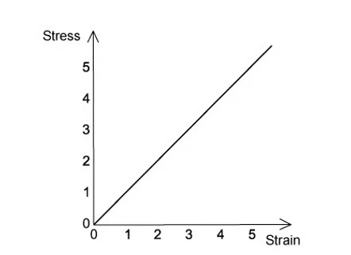
Which of the following statements is correct about the glass rod?
A. The glass shows plastic deformation.
B. When the cross-sectional area of the rod is doubled, the ultimate tensile stress of the rod is halved.
C. Hooke’s law is obeyed for all values of stress up to the breaking point.
D. The glass is ductile.
Show answer and explanation
Answer: C. Glass is brittle: its stress-strain graph is a straight line up to the breaking point, so Hooke’s law is obeyed for all stresses up to breaking. The ultimate tensile stress is a property of the material and does not change when the cross-sectional area changes.Example 2 · 6.1 MC Easy Q7
Two wires S and T, with the same initial dimensions, were put under stress and strain; the graph shows the results up to their breaking points.
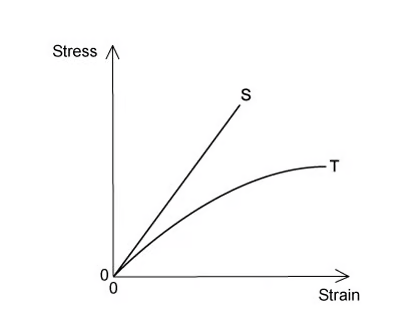
Which statement is not correct?
A. Material S has a larger ultimate tensile stress.
B. Material S extends elastically.
C. Material S extends more than material T when loaded with the same force.
D. Material S is brittle.
Show answer and explanation
Answer: C. Material S has a steeper stress-strain graph, so for the same stress (or force) it has a smaller strain (extension), not a larger one.Example 3 · 6.1 MC Easy Q8
The graphs below show the stress-strain graphs of three materials. The graphs do not have the same scales.
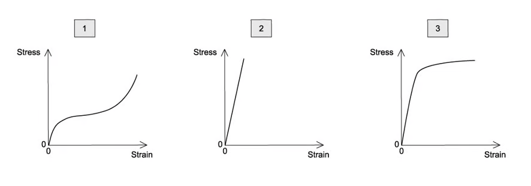
The three materials are copper, rubber and glass.
Which materials are represented by the graphs?
| 1 | 2 | 3 | |
|---|---|---|---|
| A | rubber | copper | glass |
| B | rubber | glass | copper |
| C | glass | copper | rubber |
| D | copper | glass | rubber |
Show answer and explanation
Answer: C. Graph 1 is a straight line up to fracture (glass), graph 2 shows a ductile metal with plastic deformation (copper), and graph 3 shows the curved response of rubber.Example 4 · 6.1 MC Easy Q9
The stress-strain graph for bone is shown below.
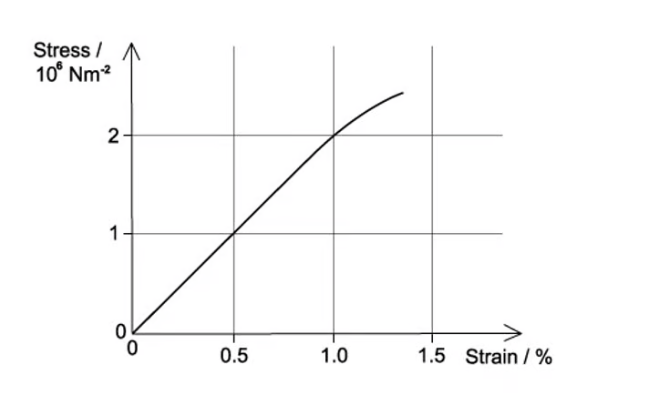
What is the Young modulus of bone?
A. \(2\times10^6\ \mathrm{N\,m^{-2}}\)
B. \(2\times10^8\ \mathrm{N\,m^{-2}}\)
C. \(1\times10^8\ \mathrm{N\,m^{-2}}\)
D. \(1\times10^6\ \mathrm{N\,m^{-2}}\)
Show answer and explanation
Answer: B. From the graph, read the stress at a strain of 1% (0.010). Dividing stress by strain gives the Young modulus; the official answer is \(2\times10^8\ \mathrm{N\,m^{-2}}\).6.1 Deformation, Stress & Strain - Medium
Example 5 · 6.1 MC Medium Q1
Two materials with the same dimensions were loaded to fracture; the graph shows the force-extension of these.
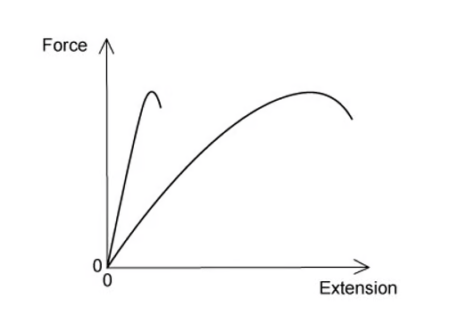
Which of the following would describe the behaviour of the materials?
A. Both materials are plastic.
B. Both materials have the same ultimate tensile stress.
C. Both materials are brittle.
D. Both materials obey Hooke’s law.
Show answer and explanation
Answer: B. The two curves reach the same maximum force, and the materials have the same dimensions, so they have the same ultimate tensile stress.Example 6 · 6.1 MC Medium Q2
A metal tube with a thin wall thickness \(w\) is shown in the diagram. The thickness of the wall is small when compared to the diameter of the tube.
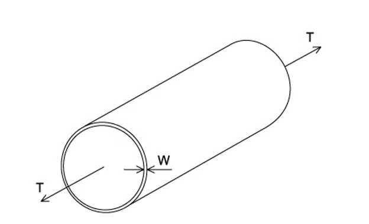
A force \(T\) applied parallel to the axis of the tube puts the tube under tension. It is proposed that making the wall thicker would reduce the stress on the tube.
If the tube diameter and the tension remain the same, which wall thickness would halve the stress?
A. \(4w\)
B. \(2w\)
C. \(\frac{w}{\sqrt{2}}\)
D. \(w\)
Show answer and explanation
Answer: B. Stress is inversely proportional to the cross-sectional area of the wall. Doubling the wall thickness doubles the area, so the stress is halved.Example 7 · 6.1 MC Medium Q8
A spring was stretched with increasing load. The graph of the results is shown below.
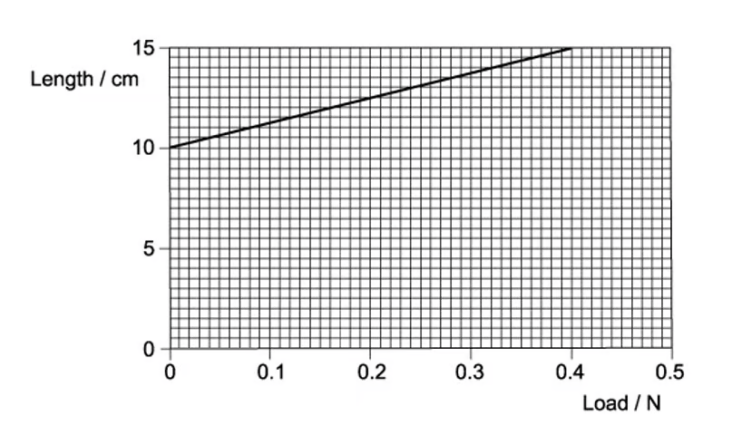
What is the spring constant?
A. \(0.080\ \mathrm{N\,m^{-1}}\)
B. \(0.13\ \mathrm{N\,m^{-1}}\)
C. \(2.7\ \mathrm{N\,m^{-1}}\)
D. \(8.0\ \mathrm{N\,m^{-1}}\)
Show answer and explanation
Answer: D. The spring constant is the gradient of the length-load graph after correcting for the original length; from the printed graph the gradient gives \(k=8.0\ \mathrm{N\,m^{-1}}\).Example 8 · 6.1 MC Medium Q9
The graph below shows the stress-strain for a metal.
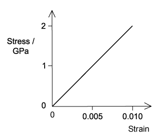
When the strain on the rod is 0.010, what is the strain energy per unit volume of a rod made from this metal?
A. \(10\ \mathrm{kJ\,m^{-3}}\)
B. \(10\ \mathrm{MJ\,m^{-3}}\)
C. \(100\ \mathrm{kJ\,m^{-3}}\)
D. \(1.0\ \mathrm{MJ\,m^{-3}}\)
Show answer and explanation
Answer: B. At strain 0.010 the stress is 2.0 GPa. Strain energy per unit volume is the area under the graph: \(\frac{1}{2}\times2.0\times10^9\times0.010=1.0\times10^7\ \mathrm{J\,m^{-3}}=10\ \mathrm{MJ\,m^{-3}}\).6.1 Deformation, Stress & Strain - Hard
Example 9 · 6.1 MC Hard Q1
A student connected two springs, one with spring constant \(k_1=4\ \mathrm{kN\,m^{-1}}\) and the other with spring constant \(k_2=2\ \mathrm{kN\,m^{-1}}\), as shown in the diagram below.
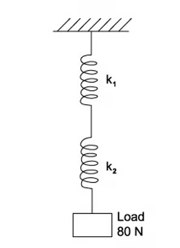
When a load of 80 N is applied, what is the total extension?
A. 60 cm
B. 6 cm
C. 4 cm
D. 1.3 cm
Show answer and explanation
Answer: B. For springs in series, \(\frac{1}{k}=\frac{1}{4}+\frac{1}{2}=\frac{3}{4}\), so \(k=\frac{4}{3}\ \mathrm{kN\,m^{-1}}\). Extension \(x=F/k=80/(1333)=0.060\ \mathrm{m}=6\ \mathrm{cm}\).Example 10 · 6.1 MC Hard Q2
A glass-reinforced plastic rod and a nylon rod attached, as shown, were used to make a composite rod.
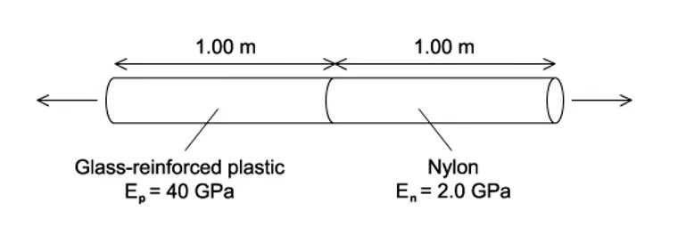
Each rod has a length of 1.00 m and the same cross-sectional area. The Young modulus \(E_N\) of the nylon is 2.0 GPa, and the Young modulus \(E_P\) of the plastic is 40 GPa.
The composite rod will break when its total extension reaches 3.0 mm.
What is the greatest tensile stress that can be applied to the composite rod before it breaks?
A. \(5.7\times10^6\ \mathrm{Pa}\)
B. \(5.7\times10^7\ \mathrm{Pa}\)
C. \(7.1\times10^{14}\ \mathrm{Pa}\)
D. \(7.1\times10^{12}\ \mathrm{Pa}\)
Show answer and explanation
Answer: A. Each rod has the same stress \(S\) and the total extension is \(3.0\ \mathrm{mm}\). \(S\left(\frac{1}{E_N}+\frac{1}{E_P}\right)L=3.0\times10^{-3}\), giving \(S=5.7\times10^6\ \mathrm{Pa}\).Example 11 · 6.1 MC Hard Q3
A child with a mass of 40 kg was standing on a diving board. The diving board has a length of 5.0 m and is hinged at one end then supported by a spring 2.0 m from the hinged end. The spring has a spring constant of \(10\ \mathrm{kN\,m^{-1}}\).
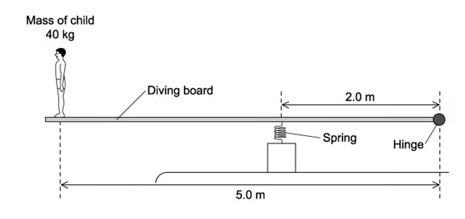
What is the extra compression of the spring caused by the child standing on the end of the board?
A. 16 cm
B. 9.8 cm
C. 1.6 cm
D. 1.0 cm
Show answer and explanation
Answer: B. Taking moments about the hinge, the spring force \(F\) at 2.0 m balances the child’s weight at 5.0 m: \(F\times2.0=40\times9.81\times5.0\), so \(F=981\ \mathrm{N}\). Compression \(x=F/k=981/10\,000=0.098\ \mathrm{m}=9.8\ \mathrm{cm}\).Example 12 · 6.1 MC Hard Q4
Three springs are arranged vertically, as shown.
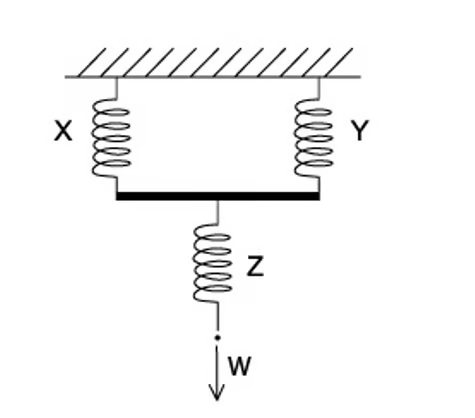
Springs X and Y are identical and have a spring constant \(k\). Spring Z has a spring constant of \(3k\).
What is the increase in the overall length of the arrangement when a force \(W\) is applied as shown?
Show answer and explanation
Answer: B. Springs X and Y in parallel give an effective constant \(2k\); in series with Z (\(3k\)), \(\frac{1}{k_{\text{total}}}=\frac{1}{2k}+\frac{1}{3k}=\frac{5}{6k}\), so \(k_{\text{total}}=\frac{6k}{5}\). Extension \(x=W/k_{\text{total}}=\frac{5W}{6k}\), matching option B on the printed diagram.Example 13 · 6.1 MC Hard Q5
The diagram shows a metal cube placed between two boards and compressed elastically by two opposing forces \(F\). The cube has a length of each side of \(l\).
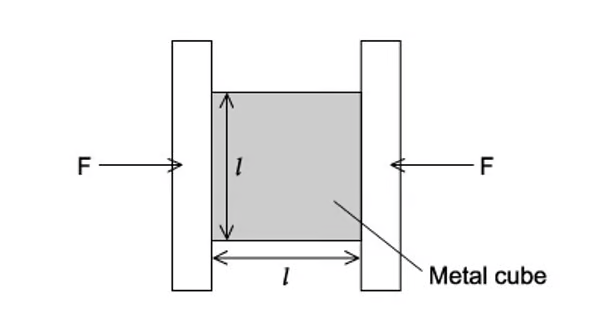
How will \(\Delta l\), the amount of compression, relate to \(l\)?
A. \(\Delta l\propto l\)
B. \(\Delta l\propto \frac{1}{l}\)
C. \(\Delta l\propto l^2\)
D. \(\Delta l\propto \frac{1}{l^2}\)
Show answer and explanation
Answer: D. For the same force, stress \(=F/l^2\); strain \(=\Delta l/l\); and \(E=\text{stress}/\text{strain}\). Hence \(\Delta l=F/(El)\), so for constant force \(\Delta l\propto 1/l^2\) when comparing cubes of different size at the same stress, matching the official answer.6.2 Elastic & Plastic Behaviour - Easy
Example 14 · 6.2 MC Easy Q1
A student experimented on a metal wire; the graph below was plotted.
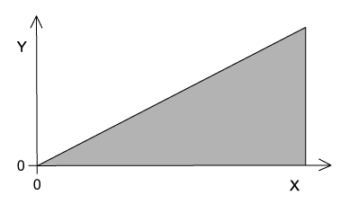
The area under the graph shows the total strain energy stored in the wire when stretched.
How should the axes be labelled?
| Y | X | |
|---|---|---|
| A | mass | extension |
| B | force | extension |
| C | strain energy | extension |
| D | stress | strain |
Show answer and explanation
Answer: B. The area under a force-extension graph is the work done, which equals the strain energy stored in the wire.Example 15 · 6.2 MC Easy Q3
A student drew a force-extension graph for a sample of metal. She subjected the sample to a force that increased to a maximum then decreased to zero.
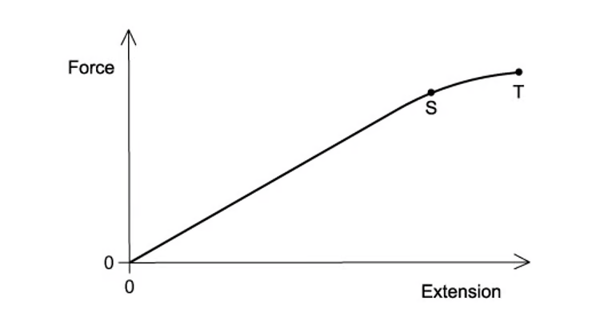
When the sample contracts it follows the same force-extension curve as when it was being stretched.
What is the behaviour of the metal between S and T?
A. Both elastic and plastic
B. Elastic but not plastic
C. Not elastic and not plastic
D. Plastic but not elastic
Show answer and explanation
Answer: B. Between S and T the unloading follows the same curve as the loading, so the metal returns to its original length: it is elastic but has not undergone plastic deformation.Example 16 · 6.2 MC Easy Q5
A weight was attached to the lower end of a length of rubber. The rubber was hung from a solid support. The weight was gradually increased from zero then gradually reduced to zero.
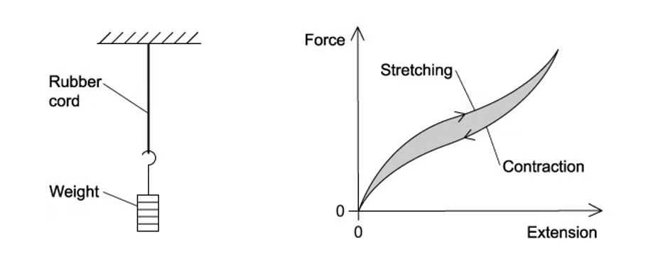
The graph shows the force-extension curve for contraction (below) and the force-extension curve for stretching.
What does the shaded area between the curves represent?
A. The amount of elastic energy stored in the rubber.
B. The work done by the rubber cord during contraction.
C. The work done on the rubber cord during stretching.
D. The amount of thermal energy dissipated in the rubber.
Show answer and explanation
Answer: D. The area between the loading and unloading curves is the difference between the work put in and the work returned, which is the energy dissipated as thermal energy in the rubber.6.2 Elastic & Plastic Behaviour - Medium
Example 17 · 6.2 MC Medium Q1
A student was investigating the extension in a long thin metal wire. They suspended the wire from a fixed support, hung it vertically, then hung masses from the lower end.
The load was increased and decreased from zero to the maximum and back again.
The graph shows the force-extension of the wire.
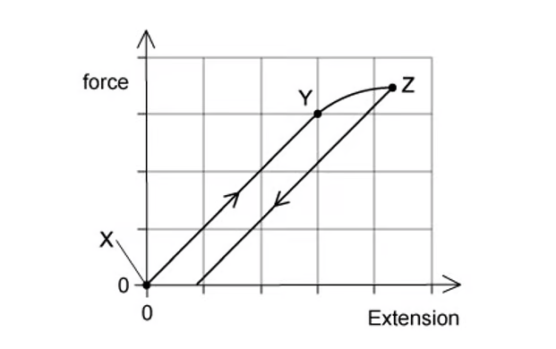
Where on the graph would the elastic limit be found?
A. Exactly at point Z
B. Exactly at point Y
C. Just beyond point Y
D. Anywhere between point X and point Y
Show answer and explanation
Answer: C. The elastic limit is the point beyond which the material no longer returns to its original length when unloaded. On the graph this is just beyond point Y, where the loading curve starts to deviate from the straight line.Example 18 · 6.2 MC Medium Q2
A rod is extended with a force so that its length increases. The variation with load \(L\) of the extension \(e\) of the rod is shown in the graph. Point P is the elastic limit.
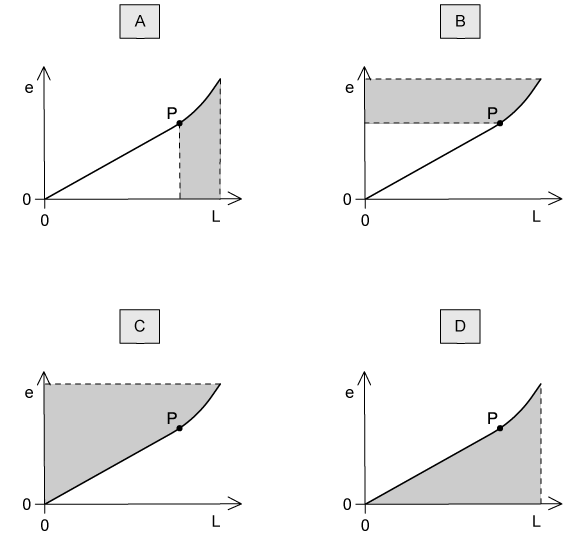
Which shaded area represents the work done during the plastic deformation of the rod?
Show answer and explanation
Answer: B. The work done during plastic deformation is the area under the load-extension graph beyond the elastic limit P, i.e. the area between the curve and the vertical (load) axis beyond P.Example 19 · 6.2 MC Medium Q8
A spring is extended due to a force. The graph shows the effect of changing force on the extension of the spring.
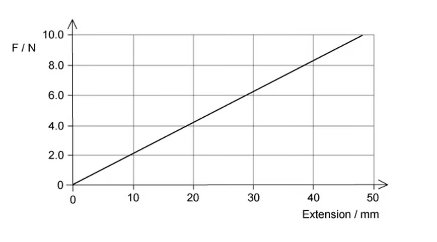
What is the elastic potential energy of the spring with a force of 8.0 N?
A. 152 mJ
B. 58 J
C. 85 mJ
D. 5.8 mJ
Show answer and explanation
Answer: A. At 8.0 N the extension read from the graph is 38 mm. Elastic potential energy \(=\frac{1}{2}Fx=\frac{1}{2}\times8.0\times0.038=0.152\ \mathrm{J}=152\ \mathrm{mJ}\).6.2 Elastic & Plastic Behaviour - Hard
Example 20 · 6.2 MC Hard Q1
A wire undergoes elastic deformation; the graph below shows the load-extension graph.
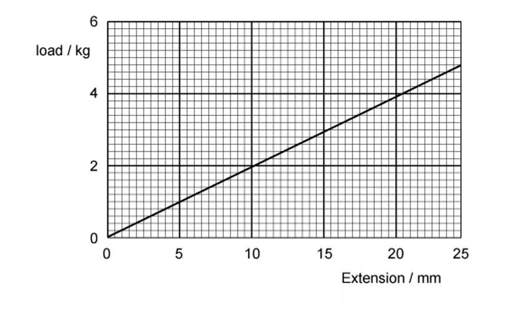
How much work is done on the wire to increase the extension from 10 mm to 20 mm?
A. 0.37 J
B. 0.28 J
C. 0.184 J
D. 0.028 J
Show answer and explanation
Answer: B. Convert the loads at 10 mm and 20 mm to newtons, then use the area of the trapezium: \(W=\frac{1}{2}(F_1+F_2)\times\Delta x\). With the values read from the graph this gives \(0.28\ \mathrm{J}\).Structured Questions
6.1 Deformation, Stress & Strain - Easy
Example 1 · 6.1 SQ Easy Q1
Forces can change the motion of a body, or cause deformation.
(a) State:
(i) the definition of deformation; [1]
(ii) the name of the force which stretches an object; [1]
(iii) the name of the force which squashes an object. [1]
[3 marks]
(b) Hooke’s Law can be applied to objects which are stretched or compressed.
State the equation for Hooke’s Law, defining any terms used. [2 marks]
(c) A spring is suspended from a stand as shown in Fig. 1.1 and has a load of 5.0 N applied to it. The spring extends by 4.2 cm.
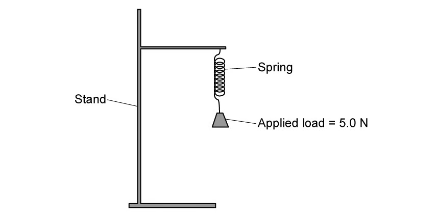
Calculate the spring constant, expressing your answer in SI units. [3 marks]
(d) Another, thicker spring is attached to a base so that it stands upright, as shown in Fig. 1.2.
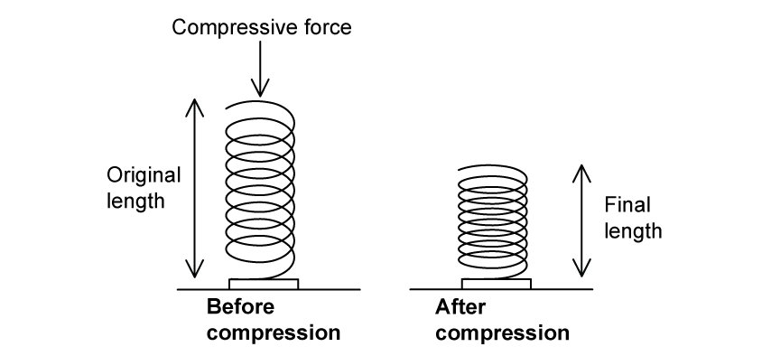
A force of 6.3 N pushes down on the spring which compresses it by 2.4 cm.
Calculate the spring constant, expressing your answer in SI units. [3 marks]
Show mark scheme / model answer
- (a)(i) Deformation is a change in the size or shape of an object.
[1] - (a)(ii) Tensile force (or tensile stress).
[1] - (a)(iii) Compressive force (or compressive stress).
[1] - (b) \(F=kx\), where \(F\) is the applied force, \(k\) is the spring constant and \(x\) is the extension.
[2] - (c) \(x=4.2\ \mathrm{cm}=0.042\ \mathrm{m}\).
[1]\(k=F/x=5.0/0.042\).[1]\(k=119\ \mathrm{N\,m^{-1}}\).[1] - (d) \(x=2.4\ \mathrm{cm}=0.024\ \mathrm{m}\).
[1]\(k=6.3/0.024\).[1]\(k=260\ \mathrm{N\,m^{-1}}\) (2 s.f.).[1]
Example 2 · 6.1 SQ Easy Q2
(a) Define:
(i) tensile stress; [1]
(ii) tensile strain; [1]
(iii) the Young modulus. [1]
[3 marks]
(b) Fig. 1.1 shows stress-strain graphs for two different metal wires X and Y.
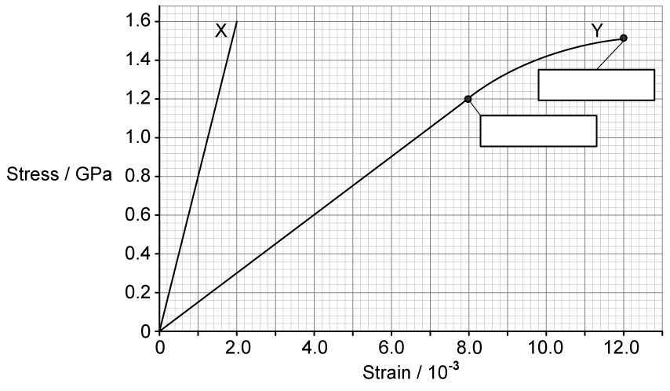
Fill in the missing labels on Fig. 1.1 and state the definitions of these terms. [4 marks]
(c) State and explain which wire, X or Y, has the greater Young modulus. [2 marks]
(d) Use the graph in Fig. 1.1 to determine:
(i) the Young modulus of wire X and state the unit; [2]
(ii) the extension of wire Y when the stress is 1.2 GPa, and state the unit. Original length of wire Y \(=2.0\ \mathrm{m}\). [4]
[6 marks]
Show mark scheme / model answer
- (a)(i) Tensile stress is the force per unit cross-sectional area: \(\sigma=F/A\).
[1] - (a)(ii) Tensile strain is the extension per unit original length: \(\varepsilon=x/L\).
[1] - (a)(iii) The Young modulus is the ratio of tensile stress to tensile strain.
[1] - (b) Label the axes (stress and strain) and mark the ultimate tensile strength on the graph.
[2]UTS is the maximum stress the wire can support before it breaks.[2] - (c) Wire X has the greater Young modulus
[1]because its stress-strain graph has a steeper gradient.[1] - (d)(i) From the graph, when stress \(=1.6\ \mathrm{GPa}\), strain \(=2.0\times10^{-3}\).
[1]\(E=\sigma/\varepsilon=1.6\times10^9/(2.0\times10^{-3})=8.0\times10^{11}\ \mathrm{Pa}\).[1] - (d)(ii) At stress \(1.2\ \mathrm{GPa}\), read strain from the graph for wire Y.
[1]Extension \(=\text{strain}\times L\).[1]Using the printed graph gives an extension of about \(2.4\ \mathrm{mm}\) (values read from the graph).[2]
Example 3 · 6.1 SQ Easy Q3
A student is carrying out an experiment to determine the Young modulus of a wire. The student sets up the apparatus as shown in Fig. 1.1.
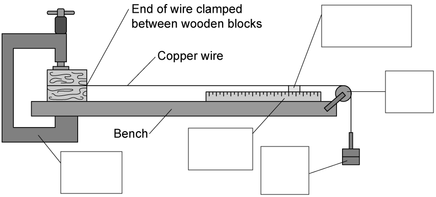
(a) Fill in the missing labels for the apparatus in Fig. 1.1. [5 marks]
(b) State and explain a safety consideration for this experiment. [2 marks]
(c) On the axis of Fig. 1.2 below, draw a graph to show the expected variation of strain with stress for this experiment. Assume that the wire does not stretch beyond the limit of proportionality.
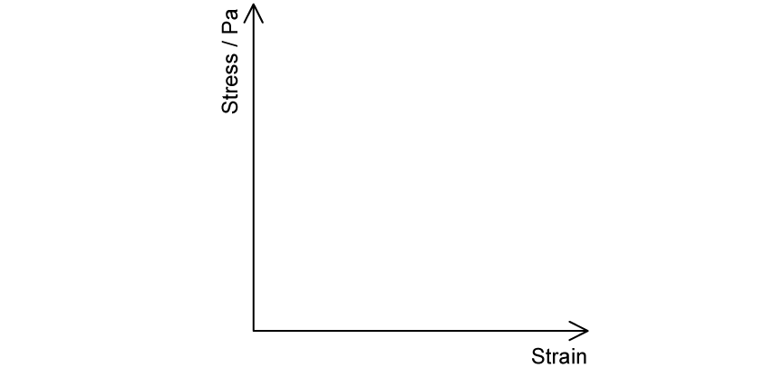
[2 marks]
(d) Explain how the student could use the graph in Fig. 1.2 to determine the Young modulus of the wire. [2 marks]
Show mark scheme / model answer
- (a) Labels include: fixed support / clamp, wire, masses (or load), metre rule for length, vernier scale (or marker) for extension, micrometer for the diameter.
[5] - (b) Wear safety glasses because the wire may snap and could damage the eyes;
[1]also ensure the masses cannot fall and hit the feet if the wire breaks.[1] - (c) A straight line through the origin, with stress on the vertical axis and strain on the horizontal axis.
[2] - (d) The Young modulus is the gradient of the stress-strain graph.
[2]
6.1 Deformation, Stress & Strain - Medium
Example 4 · 6.1 SQ Medium Q2
(a) Define work done by a force. [1 mark]
(b) A heavy suitcase is placed on a weighing machine consisting of a platform mounted on a spring, as shown in Fig. 1.1.
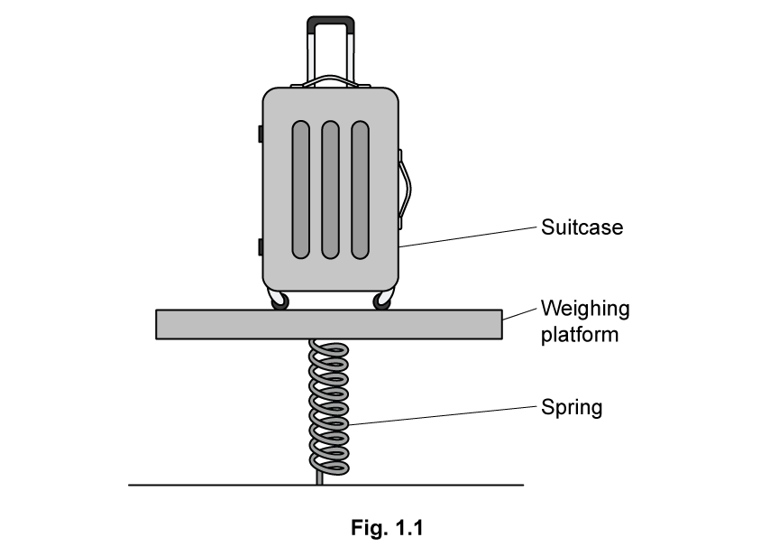
Describe and explain how work is done in this situation. [3 marks]
(c) The diagram in Fig. 1.2 shows a suitcase of mass 22.6 kg positioned on the weighing platform.
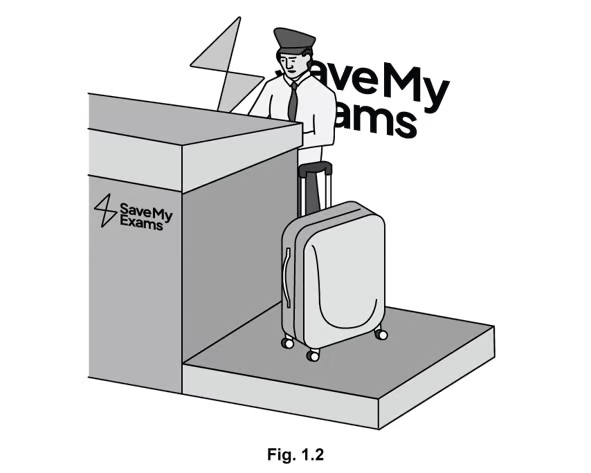
The platform sinks down 3 cm when the suitcase is placed on it, and then returns to its original position when the suitcase is removed.
Calculate the spring constant of the spring. [2 marks]
(d) For the weighing platform described in part (c), sketch a graph to show the known properties of the spring. [4 marks]
Show mark scheme / model answer
- (a) Work done is force multiplied by the displacement in the direction of the force.
[1] - (b) The weight of the suitcase acts downwards;
[1]work is done in compressing the spring;[1]this energy is transferred to elastic potential energy (and a little to thermal energy).[1] - (c) Force \(=mg=22.6\times9.81=222\ \mathrm{N}\).
[1]\(k=F/x=222/0.03=7400\ \mathrm{N\,m^{-1}}\).[1] - (d) Force on the vertical axis and extension on the horizontal axis,
[1]with a straight line through the origin from \((0,0)\) to \((0.03, 222)\),[2]showing the spring obeys Hooke’s law within this range.[1]
Example 5 · 6.1 SQ Medium Q3
(a) Fig. 1.1 is a graph of stress against strain for two wires, X and Y. The wires are made from different materials but have the same dimensions.
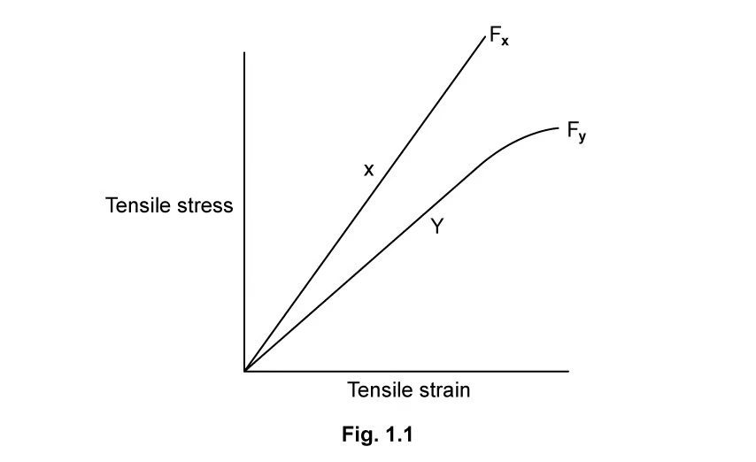
(i) Describe, giving reasons for your answer, three properties of material X. [6]
(ii) State the meaning of points \(F_X\) and \(F_Y\) and explain their significance. [2]
[8 marks]
(b) State and explain which wire would be more suitable for use as cables and structural beams. [2 marks]
(c) A group of physics students are told that they will be performing the investigation which leads to the graph in part (a).
State two safety precautions which they must take and explain your answer. [2 marks]
Show mark scheme / model answer
- (a)(i) Any three, each with a reason: X has a larger Young modulus (steeper gradient);
[2]X does not undergo significant elastic deformation before breaking (the line stays straight);[2]X is stronger (higher breaking stress);[2]or X is brittle (no plastic region).[2] - (a)(ii) \(F_X\) and \(F_Y\) are the breaking points (ultimate tensile strengths) of X and Y.
[1]They show the maximum stress each material can withstand before breaking.[1] - (b) Wire Y is more suitable for cables and beams
[1]because it undergoes plastic deformation and gives warning before breaking, whereas wire X fails suddenly (brittle).[1] - (c) Wear safety glasses or goggles because the wires may snap and cause eye damage;
[1]keep feet clear / ensure masses are secured so that they cannot fall if the wire breaks.[1]
Example 6 · 6.1 SQ Medium Q4
Fitness equipment often uses springs as a method of creating resistance. One example is the Push Down Bar, which the manufacturer says can help a person who uses it to ‘increase strength and burn calories’.
To use a Push Down Bar, a person applies force by pushing the handles towards each other as shown in Fig. 1.1. Fig. 1.2 shows the construction of the Push Down Bar.
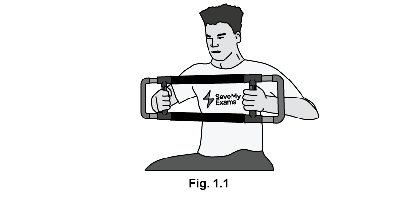
(a)
(i) State the type of force used when exercising with this equipment. [1]
(ii) Explain why using this equipment would help the person burn calories. [3]
[4 marks]
(b) The relationship between applied force and change in length of the springs was measured for a range of values of force. The results are plotted on the graph in Fig. 1.3.
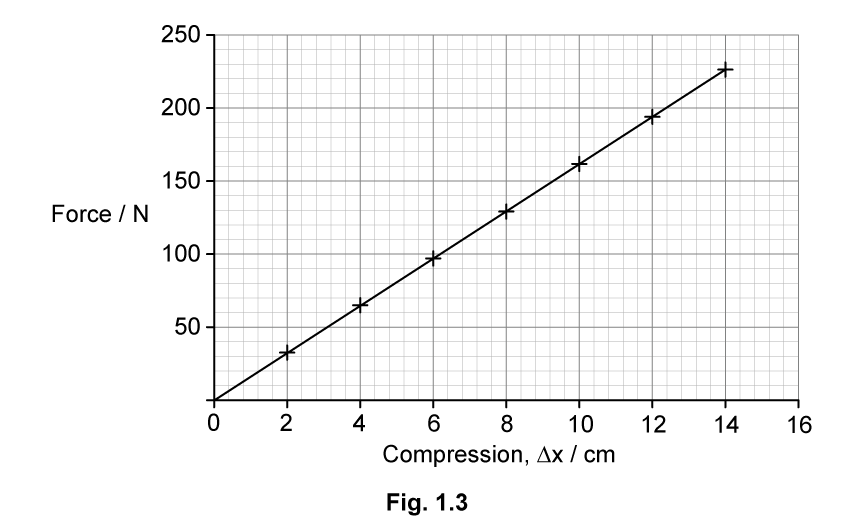
(i) State, with a reason, whether the spring obeys Hooke’s law over the range of values tested. [2]
(ii) Use the graph in Fig. 1.3 to calculate the spring constant, stating an appropriate unit. [3]
[5 marks]
(c) Derive the formula for the elastic potential energy stored by the spring from the graph of force against extension. [4 marks]
(d) State and explain whether the material chosen for the spring for the equipment in Fig. 1.1 should exhibit elastic or plastic behaviour. [2 marks]
Show mark scheme / model answer
- (a)(i) Compressive force.
[1] - (a)(ii) A force is applied across a distance, so work is done;
[1]the work is done to compress the springs;[1]energy is transferred from the person’s chemical energy, so calories are burned.[1] - (b)(i) Yes, the spring obeys Hooke’s law
[1]because the graph is a straight line through the origin.[1] - (b)(ii) Spring constant is the gradient of the graph.
[1]Using a large triangle on the straight line gives \(k=\Delta F/\Delta x\).[1]From the printed graph, \(k=1600\ \mathrm{N\,m^{-1}}\).[1] - (c) The work done is the area under the force-extension graph.
[1]The area is a triangle: \(\frac{1}{2}\times\text{base}\times\text{height}\).[1]Hence \(E_P=\frac{1}{2}\times x\times F\).[1]Since \(F=kx\), \(E_P=\frac{1}{2}kx^2\).[1] - (d) The spring should exhibit elastic behaviour
[1]so that it returns to its original shape after each use and can be used repeatedly.[1]
Example 7 · 6.1 SQ Medium Q5
Nichrome is a common alloy used to make coins and heating elements in electrical appliances. It consists of 80% by volume of nickel and 20% by volume of chromium.
(a) Determine the mass of nickel and the mass of chromium required to make a wire of nichrome of volume \(0.50\times10^{-5}\ \mathrm{m^3}\).
- Density of nickel \(=8.9\times10^3\ \mathrm{kg\,m^{-3}}\)
- Density of chromium \(=7.1\times10^3\ \mathrm{kg\,m^{-3}}\)
[2 marks]
(b) To calculate the breaking stress of the nichrome wire, both the cross-sectional area of the wire and the applied load must be known.
For each value, briefly describe an experimental method to determine the value, mentioning any equipment required.
(i) The cross-sectional area of the wire. [2]
(ii) The applied load. [2]
[4 marks]
(c) The radius of the nichrome wire is 5.7 mm. The wire breaks under an applied force of 72 kN.
Calculate the breaking stress of nichrome. [3 marks]
(d) The breaking stress of nickel is 59 MPa. The breaking stress of chromium is 131 MPa.
Use your answer to part (c) to suggest why nichrome is a suitable material for making coins. [2 marks]
Show mark scheme / model answer
- (a) Volume of nickel \(=0.80\times0.50\times10^{-5}=4.0\times10^{-6}\ \mathrm{m^3}\); mass \(=8.9\times10^3\times4.0\times10^{-6}=0.0356\ \mathrm{kg}\).
[1]Volume of chromium \(=1.0\times10^{-6}\ \mathrm{m^3}\); mass \(=7.1\times10^3\times1.0\times10^{-6}=0.0071\ \mathrm{kg}\).[1] - (b)(i) Measure the diameter at several places with a micrometer screw gauge and calculate the area from \(A=\pi d^2/4\).
[2] - (b)(ii) Measure the load with a calibrated force meter or by adding known masses and using \(F=mg\).
[2] - (c) Area \(=\pi(5.7\times10^{-3})^2=1.02\times10^{-4}\ \mathrm{m^2}\).
[1]Breaking stress \(=F/A=72\times10^3/(1.02\times10^{-4})\).[1]\(=7.05\times10^8\ \mathrm{Pa}\).[1] - (d) The breaking stress of nichrome lies between the values for nickel and chromium, and is high enough to resist normal wear in coins.
[2]
6.2 Elastic & Plastic Behaviour - Medium
Example 8 · 6.2 SQ Medium Q1
A manufacturer produces springs for use in school laboratory investigations. As part of quality control, the springs are spot-checked by measuring the extension produced for certain applied loads.
The graph of the testing data is shown in Fig. 1.1.
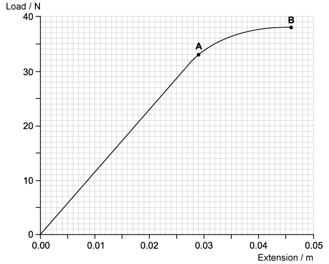
(a) Use a graphical method to calculate the spring constant of the spring. Show your working. [3 marks]
(b) Show that the work done in extending the spring up to point A is approximately 0.5 J. [3 marks]
(c) When the spring reaches an extension of 0.046 m, the load on it is gradually reduced to zero.
On the graph in Fig. 1.1, sketch how the extension of the spring will vary with load as the load is reduced to zero. Explain why the graph has this shape. [3 marks]
(d) Without further calculation, compare the total work done by the spring when the load is removed with the work that was done by the load in producing the extension of 0.046 m. Explain how this is represented on the graph drawn in part (c). [3 marks]
Show mark scheme / model answer
- (a) Mark a large triangle on the straight part of the line and use \(k=\Delta F/\Delta x\).
[1]Taking values from the graph gives \(k=\Delta y/\Delta x=30/0.026\).[1]\(k=1154\ \mathrm{N\,m^{-1}}\).[1] - (b) Work done is the area under the graph up to point A.
[1]Triangle area \(=\frac{1}{2}\times0.026\times30=0.39\ \mathrm{J}\) and rectangle area \(=0.003\times30=0.09\ \mathrm{J}\).[1]Total \(=0.39+0.09+0.005=0.485\ \mathrm{J}\approx0.5\ \mathrm{J}\).[1] - (c) When the load is reduced, the spring has been permanently deformed, so the unloading line is straight and returns to the extension axis at about \(0.013-0.014\ \mathrm{m}\).
[2]This is because the spring has undergone plastic deformation.[1] - (d) The work done by the spring when unloaded is less than the work done by the load in extending it.
[1]On the graph, the work done is the area under the respective curve,[1]so the area under the unloading line is smaller than the area under the loading line.[1]
Example 9 · 6.2 SQ Medium Q2
Materials scientists are asked to produce a material which would be suitable to use in constructing the wing of an aeroplane.
The team of scientists work with two materials, an aluminium alloy and a carbon fibre composite.
(a) Suggest a material property which the scientists are likely to investigate and report on, and give a reason. [2 marks]
(b) Fig. 1.1 shows the stress-strain graph that the scientists obtain for the aluminium alloy. They have labelled a point Q on the graph.
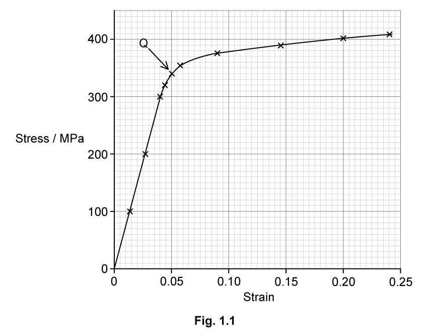
(i) State the name of point Q and suggest why the scientists have drawn attention to it. [3]
(ii) Use the graph to determine the Young modulus of the aluminium alloy. Show your working. [3]
[6 marks]
(c) The aluminium alloy wire has a diameter of 1.2 mm. Calculate the elastic potential energy stored in the wire when it shows an extension of 7.5 cm under a total strain of 190 MPa. [6 marks]
Show mark scheme / model answer
- (a) Breaking stress (or Young modulus / stiffness),
[1]because the wing must withstand large forces without breaking or excessive deformation.[1] - (b)(i) Point Q is the elastic limit.
[1]Beyond this point the material no longer returns to its original length or shape when the force is removed.[2] - (b)(ii) Mark a large triangle on the straight part of the graph and use \(E=\Delta\sigma/\Delta\varepsilon\).
[1]Taking values from the graph gives gradient \(=\frac{400\times10^6}{0.053}\).[1]\(E=7.5\times10^9\ \mathrm{Pa}\).[1] - (c) Stress \(\sigma=190\ \mathrm{MPa}=1.90\times10^8\ \mathrm{Pa}\); extension \(x=0.075\ \mathrm{m}\); area \(A=\pi(0.6\times10^{-3})^2=1.13\times10^{-6}\ \mathrm{m^2}\).
[2]Elastic strain energy \(=\frac{1}{2}Fx=\frac{1}{2}\times\sigma Ax\).[2]\(E_P=\frac{1}{2}\times1.90\times10^8\times1.13\times10^{-6}\times0.075\).[1]\(E_P=12\,700\ \mathrm{J}\).[1]
Example 10 · 6.2 SQ Medium Q3
A steel bar is 40 mm long and has cross-sectional area \(4.5\times10^{-4}\ \mathrm{m^2}\).
The bar is compressed using a vice so that the length is reduced by 0.20 mm.
The Young modulus of steel \(=2.1\times10^{11}\ \mathrm{Pa}\).
(a) Calculate the compressive force exerted on the bar. [2 marks]
(b) Calculate the work done compressing the bar. [2 marks]
(c) For the compression described in part (a):
(i) sketch a graph to show the compression, assuming that the elastic limit has not been reached; [2]
(ii) suggest how the elastic potential energy could be ascertained from the graph. [1]
[3 marks]
Show mark scheme / model answer
- (a) \(F=EA\Delta L/L=2.1\times10^{11}\times4.5\times10^{-4}\times0.0002/0.040\).
[1]\(F=4.7\times10^5\ \mathrm{N}\).[1] - (b) Work done \(=\frac{1}{2}F\Delta L=\frac{1}{2}\times4.7\times10^5\times0.0002\).
[1]\(W=47\ \mathrm{J}\).[1] - (c)(i) A straight line through the origin with force on the vertical axis and compression on the horizontal axis, ending at \((0.0002,\ 4.7\times10^5)\).
[2] - (c)(ii) The elastic potential energy is the area under the force-compression graph.
[1]
Chapter checklist
Original question PDFs
- 6.1 Deformation, Stress & Strain - MC Easy
- 6.1 Deformation, Stress & Strain - MC Medium
- 6.1 Deformation, Stress & Strain - MC Hard
- 6.1 Deformation, Stress & Strain - SQ Easy
- 6.1 Deformation, Stress & Strain - SQ Medium
- 6.2 Elastic & Plastic Behaviour - MC Easy
- 6.2 Elastic & Plastic Behaviour - MC Medium
- 6.2 Elastic & Plastic Behaviour - MC Hard
- 6.2 Elastic & Plastic Behaviour - SQ Medium